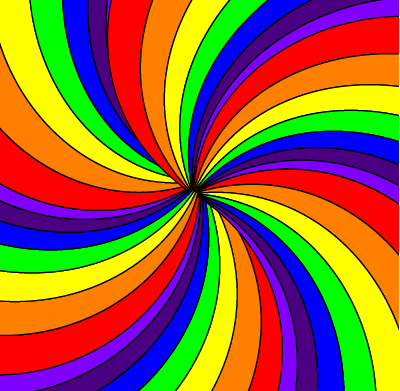

Keyboard:
wasd or arrows move
e or space rotate
Keyboard:
wasd or arrows move
e or space rotate
A 2D top down indy game about escaping an Asylum.
Releasing new levels as they are built.
3rd July released an update for the visuals - particularly for mobile
So far: Opening story - though theres still a bit more to do on it, with first bit of movement
Coming in next few weeks:Improvements to this opener - more story, a slightly more complex level
Our list of known imperfections (it's easy to come back to them after playing)
Epilepsy warning - vivid contrasting spinning colours ahead (we've taken care to keep it slow, but cannot guarantee that is sufficient for all)
small devices: we recommend landscape for the best experience
You awaken in a haze, or is it still a dream?
Other than yourself, and the hoverbed you're laying on there is only a great magnificent vortex of light descending from above, flowing around and under you
You feel calm. Very calm.
Maybe too calm, given you can barely see, and what you can see is not your normal reality.
Maybe we should start trying to figure some things out.
First off what's your name?
Ahh nice to meet you, I'm Derek, your new internal monologue.
Oh, and don't worry, you're not crazy.
All the best people have internal monologues that give themselves names like this.
Ah the rainbow has stopped. Lets try to move around, feeling for walls
Oh, theres a wall here, I still can't see it and it seems padded
This wall feels padded too
Padded. Just one wall left to check
It's official, we're in a padded room. I wonder why?That's the end of the taster beta you can keep moving around or click here to go back to the titles